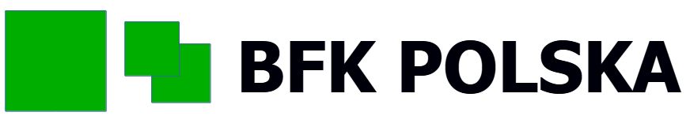
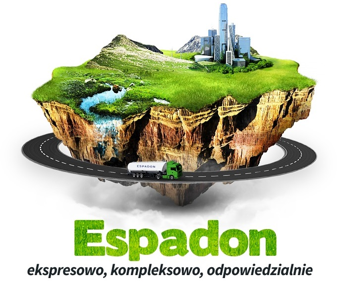

- Maintaining and expanding IT infrastructure
- User support
- Designed and implemented a system for wastes inventory. Main program has truck scale connected to it and gets data based on readings. Data is inserted to database with proper additional informations and is available for data analysts in browser program.
I’m an IT specialist with over 8 years of experience in IT field. I acquired my skills both in small and big companies. I specialize in programming using .NET framework (mainly WPF and WEB API) and in local IT environment management. In my spare time I develop my own projects.
I’m an IT specialist with over 8 years of experience in IT field. I acquired my skills both in small and big companies. I specialize in programming using .NET framework (mainly WPF and WEB API) and in local IT environment management. In my spare time I develop my own projects.
Skills
| IT Admin | Active Directory, User support, Server systems management, Computer technician |
|---|---|
| .NET | Windows Forms, WPF, Blazor, Xamarin, APIs, Services |
| Databases | MySQL, MSSQL, MariaDB |
| Coding | C#, XAML, HTML, CSS, Javascript, C++, SQL, Bash, Batch |
| Soft | Communication, Responsibility, Planning, Teamwork, Knowledge sharing |
| Languages | Polish, English (Certificate C1 Cambridge English 2018) |
| Other | Grafana, Zabbix, Checkmk, Proxmox, FFmpeg |
Experience

BFK Polska
Sep. 2020 ‑ Now
Telewizja Polska S.A.
Jun. 2017 ‑ Sep. 2020
- Maintaining and expanding IT infrastructure
- User support
- Designed and implemented a program to help journalists get required video from portals like youtube. Written in .NET. Solution included WPF main program, simple REST API and update mechanism.
- Maintaining inner iNews system ”Dalet”. Implemented scripts/programs which helped to solve many problems.
- Involved in creating solutions which required knowledge in video/audio processing. Ex. emergency broadcast system, graphical layouts/templates, control panels for broadcast room
- Developing and maintaining broadcast software (.NET)
Greenbike ‑ Ewa Zielińska
Jun. 2017 ‑ Sep. 2019
- In charge of graphics shown in studio (sometimes on screen) during live broadcasts through ”vMix” software
- Acquiring/creating graphics/videos for use by production managers

F.U.H Espadon
Feb. 2015 ‑ Jun. 2017
- Maintaining and expanding IT infrastructure
- User support
- Designed and implemented a program to improve company’s workflow. It was finally possible to eliminate paper documents considering some cases. It was my first big project.
Education
Astronomy: Oct. 2022 ‑ Now
Feb. 2021
B.E. in Digital Engineering (Speciality: Applied Computer Science)
Schools Electric‑Electronic Automatic in Szczecin
2017
IT Technician